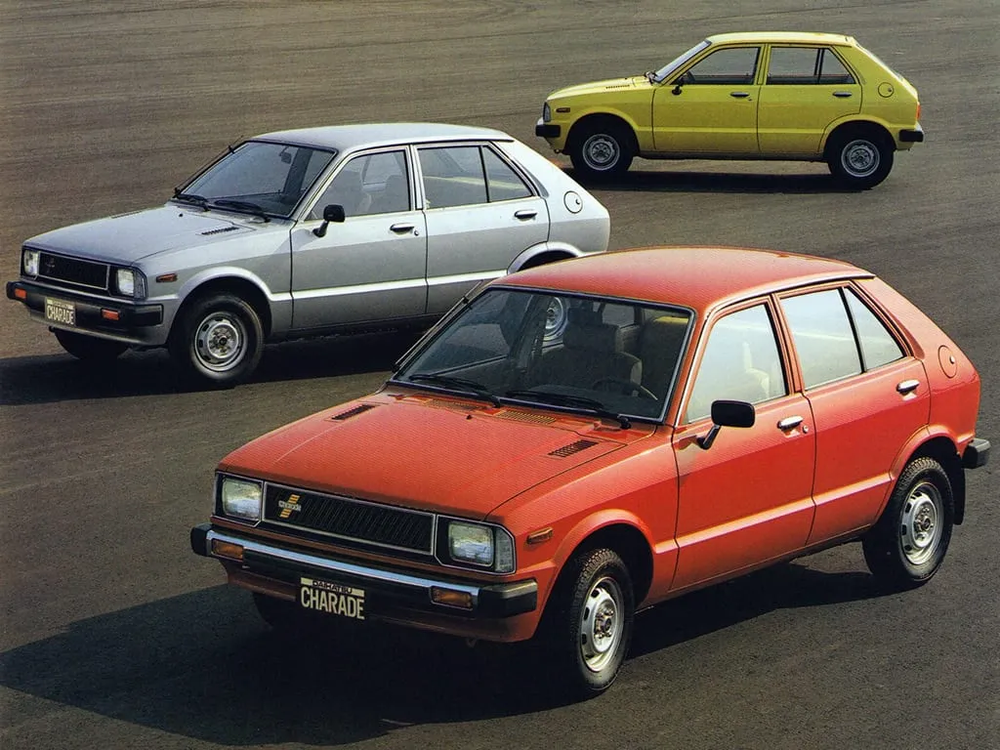

Daihatsu
Produsen mobil Jepang Daihatsu Motor Co Ltd mengklaim telah mencapai 30 juta kendaraan. Jumlah tersebut dihitung berdasarkan kendaraan bermerek Daihatsu yang diproduksi di Jepang hingga September 2020, baik unit ekspor lengkap (completely built, CBU) maupun unit ekspor dibongkar (completely scrapped, CKD).Pencapaian ini tidak lepas dari sejarah panjang Daihatsu dari berdirinya hingga saat ini. Daihatsu di Jepang memulai kegiatan produksinya pada tahun 1907 dengan nama Hatsudoki Seizo Co Ltd, yang pada saat itu seharusnya memproduksi mesin pembakaran dalam negeri sebagai kerjasama antara dunia industri dan dunia ilmiah.
Pada tahun 1931, Daihatsu memulai produksi kendaraan pertamanya, meluncurkan kendaraan roda tiga dengan mesin 500cc. Setelah era Perang Dunia Kedua pada tahun 1957, Daihatsu langsung meluncurkan truk roda tiga yang diberi nama Cebol yang artinya "kerdil". Orang Indonesia juga mengenal kendaraan ini sebagai "bemo" (becak otomatis). Mobil itu diterima dengan baik pada zamannya, dari sekitar tahun 1950-an hingga 1970-an. Kurcaci menjadi kendaraan resmi Asian Games (Asian Games) Keempat yang diadakan di Tanah Air pada tahun 1962.
Tepat satu tahun kemudian, pada tahun 1958, Daihatsu meluncurkan kendaraan roda empat pertamanya di truk kompak Daihatsu Vesta. Selain itu, Daihatsu juga meluncurkan mobil komersial pada tahun 1960, yaitu Hijet. Dan berlanjut dengan beberapa model mobil seperti Daihatsu Charade pada tahun 1977 dan Mira pada tahun 1980.
Lama-kelamaan brand Daihatsu juga menjadi salah satu brand dengan penjualan tinggi di Indonesia. Banyak produk Daihatsu yang sangat diminati masyarakat Indonesia sampai saat ini, seperti xenia dan ayla misalnya. Banyak orang yang mengenal brand Daihatsu karena beberapa keunggulan berikut ini:
| Kelebihan | Kekurangan |
|---|---|
| Harga relatif murah | Peredaman kabin kurang |
| Irit BBM | Harga jual kembali tidak bagus |
| Spare part melimpah dan harganya cukup murah | Suspensi dan handling kurang |
| Awet dan tahan lama | Tidak banyak pilihan produk |
| Teknologi dan fitur bagus | |
| Mudah dirawat | |
| Layanan aftersales baik dan tersebar di berbagai daerah |